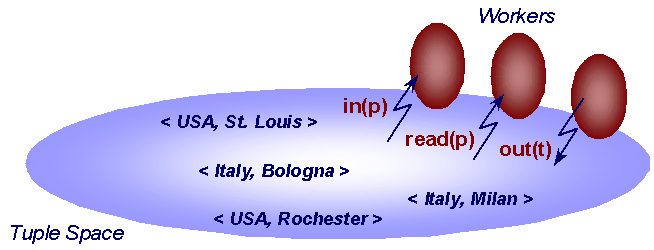
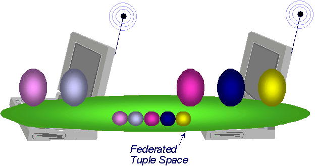

The Lime distribution is composed of four packages:
lime contains the core functions of Lime, providing the
transiently shared tuple space coordination abstraction.
lime.util contains the Launcher class, used for
starting the runtime.
lime.util.console contains a graphical console for interacting with a LimeTupleSpace,
useful for understanding how the system works, and for debugging.
lime.mobileagent.mucode provides Lime-enabled mobile
agents, through an adapter towards the µCode
system.
Lime provides coordination among processes (Lime agents) via a shared memory mechanism. When processes use Lime to coordinate, no messages are explicitly sent to other processes. All communication occurs through access to a shared medium, namely the tuple space.
To understand Lime, one must understand the notion of
Lime agent
(any thread implementing lime.LimeAgent), transiently
shared tuple space (LimeTupleSpace), tuple locations,
engagement/disengagement of hosts and agents, and reacting to changes in
context.
Lime agents are the only active entities in Lime. They are programmatically
represented by Java threads implementing the lime.ILimeAgent interface.
Applications will typically subclass from the classes lime.StationaryAgent or
lime.mobileagent.mucode.MobileAgent, which are provided by Lime and
implement such interface.
Linda. In Linda, a tuple space is a global and persistent
repository of tuples, essential data structures constituted by an
ordered sequence of typed fields. Every concurrent process in the system is
supposed to have access to the tuple space (hence the globality property),
which exists independently from the existence of the processes (hence the
persistency property). Linda provides a minimal interface to the tuple space,
with only three operations: one to write a tuple to the tuple space
(out), one to get a copy of a tuple in the tuple space that
matches a given template (rd), and a third that in addition to
getting a copy of a matching tuple withdraws it from the tuple space
(in). In case of multiple matching tuples, one is returned
non-deterministically. The last two operations are blocking, i.e., if a
matching tuple is not found the caller process is suspended until a matching
tuple appears in the tuple space. In case of multiple processes blocked to
withdraw a tuple, when the tuple appears only one process, selected
non-deterministically, will receive the tuple. Instead, if the processes are
waiting to read a tuple, every process will get a copy of the tuple.

The figure above shows three Linda processes interacting with a single tuple space with the standard Linda operations.
Lime. Lime adapts this fundamental model of coordination and communication to encompass both physical and logical mobility. In Lime, agents (the active components in the system) can roam across mobile hosts (which act as mere containers for the agents) which can roam across the physical space. The presence of mobility prevents the existence of a global and persistent tuple space. In Lime, each mobile agent owns a Lime tuple space (LTS) which follows the agent during migration. The notion of a global and persistent tuple space is dynamically recreated on a host by merging the LTSs of all the mobile agents there colocated, thus created a host-level transiently shared tuple space. Similarly, it is recreated across hosts by merging the host-level tuple spaces into a federated transiently shared tuple space. The configuration of these tuple spaces, i.e., their contents, are dynamically reconfigured by the system when an agent arrives or connection is established (tuple space engagement) and when an agent leaves or some host gets disconnected (tuple space disengagement). This way, Lime provides the programmer with the illusion of a global and persistent tuple space, which can still be accessed using the conventional Linda operations. It is this tuple space we refer to as the federated tuple space.

The figure above show two agents on one host and three on another. The small
spheres represent the tuples of the same-colored agent. Because there is
connectivity between the hosts, the federated tuple space has the illusion of
containing the tuples of all agents on the hosts. In other words, an
in operation issued by any one of the agents can return a
matching tuple from any agent.
Despite the illusion that Lime creates of a single shared memory space (the federated tuple space), it is inherently a distributed system and the tuples in the tuple spaces are physically stored across the multiple hosts in the system. In fact, each tuple is associated with a single agent (indicated in the figure by the color), and each tuple associated with an agent is stored on the same host where the agent is resident.
The standard tuple space operations out(t),
in(p), rd(p) intentionally ignore the distribution
of tuples across hosts by allowing location transparent access to the
tuple space. By default, the out(t) operation associates the
tuple being written with the agent writing it. Both in(p) and
rd(p) look for a matching tuple in the entire federated tuple
space, no matter which agent it is associated with. This view is very
powerful for simplifying applications.
Nevertheless, this view may hide too much information in cases where the
designer needs a more fine-grained control over where tuples are placed and
where query operations are performed. The out(l,t) operation
extends out(t) with a location parameter l
representing the identifier of the agent to be responsible for holding the
tuple (effectively allowing an agent to co-locate a tuple with another
agent). The semantics of out(l,t) involve two steps. The first
step is equivalent to a conventional out(t), the tuple
t is inserted in the local tuple space of the agent calling the
operation, say w. At this point the tuple t has a
current location w, and a destination location
l. If the agent l is currently connected, i.e.,
either co-located or located on a connected mobile host, the tuple
t is moved to the destination location. The combination of the
two actions are performed as a single atomic operation. On the other hand, if
l is not currently connected, the tuple remains with
w. This misplaced tuple, if not withdrawn, will remain
such unless l becomes connected. In this case, the tuple will
migrate to the tuple space associated with l as part of the
engagement transaction. Hence, using out(l,t), the caller can
specify that the tuple, albeit shared, is supposed to be placed within the
tuple space of agent l. This way, the default policy of keeping
the tuple in the caller's context until withdrawn can be overridden, and more
elaborate schemes for transient communication can be developed.
Location parameters also provide variants of the in(p) and
rd(p) operations that allow access to a slice of the current
global context. In Lime, these operations are annotated as
in(w,l,p) and rd(w,l,p), where the current and
destination locations defined earlier are used.
In a mobile environment, changes in connectivity among hosts is a normal occurrence as components move in and out of range of one another. The sets of connected hosts form dynamic communities which in Lime share their tuple space. The process of a host coming into range is referred to as engagement while the departure of a host is referred to as disengagement. Both engagement and disengagement are atomic. In other words, all hosts see the change of system configuration in the same order. During engagement, all misplaced tuples whose destination agent is now present are migrated that destination. On disengagement, no tuples need to be migrated because they are already co-located with the agent responsible for them.
One of the implementation details of the current engagement/disengagement
protocols in Lime is the need for a leader. Therefore, in order to
start a Lime community, a bootstrapping mechanism is needed to declare an
initial leader. In other words, one of the hosts must declare itself to be
the leader using LimeSystem.declareLeader(). After this, the
remainder of hosts can use the normal engagement call:
LimeSystem.engage(). The declaration of an initial leader is
purely a bootstrapping mechanism and has no semantic meaning beyond the initial
configuration. The original leader can disengage (using
LimeSystem.disengage())at any time. As long as one host remains
engaged, there is no need to declare another leader.
Note: In the current implementation of Lime, we made the decision that if a host has no LimeTupleSpaces to share, then it should not be engaged in a Lime community. Therefore, if an agent unshares that LimeTupleSpace, and that LimeTupleSpace is the last shared tuple space on that host, then the effect is the same as disengaging the host and unsharing the tuple space (as one atomic step).
Mobility enables a highly dynamic environment, where reaction to change
constitutes a major fraction of the application design. In principle, Linda's
in(p) provides some degree of reactivity by allowing an
application to wait for a tuple, and then perform an action. Nevertheless, in
practice this solution has a number of well-known drawbacks that are a
consequence of the Linda perspective that expects agents to poll proactively
and synchronously the context for new events, rather than to specify the
actions to be executed reactively and asynchronously upon occurrence of an
event.
Lime extends tuple spaces with a notion of reaction. A reaction is defined by a method to be executed when a tuple matching a specific pattern is found in the tuple space. The semantics of reactions are based on Mobile UNITY reactive statements, which all reactive statements are grouped to form a single reactive program. After each tuple space operation, the reactive program is run to fixed point. When no more matching tuples are found for any registered reaction, normal processing of tuple space operations resumes. Thus, reactions are executed atomically after each non-reactive statement. These semantics offer an adequate level of reactivity because all registered reactions are executed before the next regular tuple space operation executes.
Reactions are annotated with location parameters with the same meaning as
previously defined for in(w,l,p) and rd(w,l,p).
However, these so-called strong reactions are not allowed over
federated tuple spaces; in other words, the current location field must always
be specified and must be local to the subscriber. The reason for this lies in
the constraints introduced by physical mobility. If multiple hosts are
present, the content of the federated tuple space is physically distributed
among them. Maintaining the atomicity and serialization requirements of
reactive statements would require a distributed transaction encompassing
several hosts for every tuple space operation at any host---an
impractical solution.
For these reasons, Lime provides also a notion of weak reaction.
Weak reactions are used primarily to detect changes to portions of the global
context that involve remote tuple spaces, such as those over the federated
tuple space. In this case, the host where the pattern is successfully matched
against a tuple, and the host where the corresponding action is executed are
different. Processing of a weak reaction proceeds as in the case of strong
reactions, except that the execution of the reactsTo method does
not happen synchronously with the detection of a tuple matching. Instead, it
is guaranteed to take place eventually, if connectivity is preserved. The
ability to specify a weak reaction on the whole federated tuple space is an
extremely powerful programming tool, as it allows the programmer to describe
once and for all the actions to be performed in response to a given event,
independent of any changes in the system configuration.